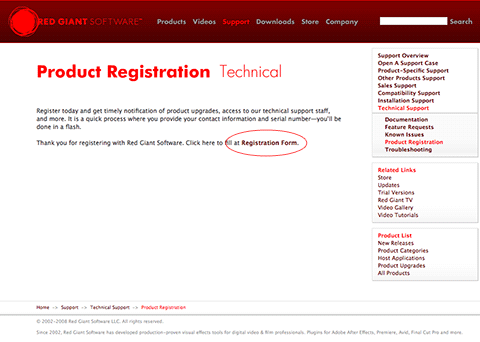

Support

Click on the Registration Form link to register your product. Alternatively, you can register with Red Giant Software by clicking on this link: Register.
Open a Support Case
The best way to contact support is through our Support Case form. We track all cases that come in to Red Giant Software. You can be assured of the quickest support response by filling out the form and providing the necessary details. Click here to open our Support page.